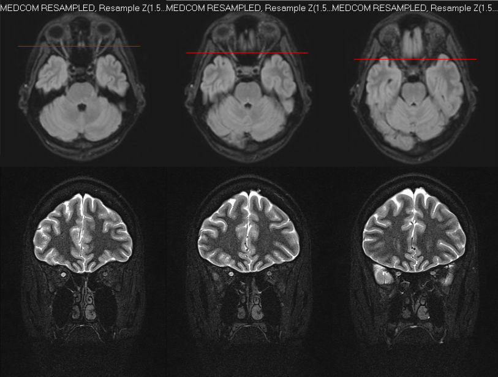

Neurite óptica cabe na EM — o III–XII clássico, não. O nome “craniano” engana: só I e II são SNC.
Neurite = mielina do II par
As manifestações mais frequentes começam pela neurite óptica: acometimento da bainha de mielina do nervo óptico. Nervo óptico = II par craniano.
I–II = SNC
Existem 12 pares cranianos: do I (olfatório) ao XII (hipoglosso). I e II representam o sistema nervoso central: neurônios com contato direto cérebro ↔ meio externo. Olfatório: partículas do cheiro. Óptico: fótons para formar imagem. Classicamente acometido na EM: o nervo óptico (visão); o I raramente entra no discurso de prova da EM.
III–XII = SNP apesar do nome
Do III ao XII: são sistema nervoso periférico, embora se chamem “pares cranianos”.
Por que “craniano”
Porque saem do tronco encefálico, que está dentro do crânio — não saem da medula como os nervos espinhais. Saem da medula = nervo espinhal; saem do tronco = par craniano. A numeração acompanha a altura de emergência no tronco: quanto mais alto, menor o número. Exemplos: III emerge do mesencéfalo; VII (facial) da ponte; XII do bulbo.
Regra de prova
EM não “pega clássico” o III–XII como alvo desmielinizante central típico da neurite; o clássico é o II par (SNC). II par = SNC; III–XII = SNP (apesar do nome “craniano”).
Resumo operacional: neurite óptica = II par = SNC = encaixa na EM em mulher jovem.

Neurite óptica direita em RM — nervo óptico hiperintenso vs contralateral. O II par inflamado é o achado de imagem.
ICON2022 · Wikimedia Commons · CC BY-SA 4.0 · fonte
O II par inflamado
O nervo óptico hiperintenso é a neurite óptica vista na RM: II par, SNC, mulher jovem. A lateralidade e o contraste com o lado normal são o que o olho da prova precisa aprender.
PisoPares I–XII: I–II em cor SNC; III–XII em cor SNP. Setas de emergência no tronco (III mesencéfalo · VII ponte · XII bulbo).
Catalogar as outras manifestações que mais caem — e o Uhthoff.
Quiz
Q1. O par classicamente acometido na neurite óptica da EM é:
Gabarito: C. O clássico desmielinizante central da neurite na EM é o II par (nervo óptico, SNC).
(A) III, (B) VII e (D) XII são SNP apesar do nome “craniano”.
Por que se cai na B: confundir “facial” com o par da visão.
Q2. Do ponto de vista de classificação SNC×SNP na EM:
Gabarito: B. O nome engana: só I e II são SNC; III–XII saem do tronco mas são SNP.
(A) “craniano” ≠ SNC. (C) nem todos são SNC. (D) I e II não são SNP.
Por que se cai na A: erro mental de etimologia — “sai do crânio, então é central”.